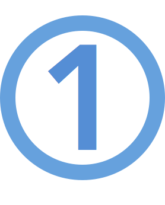

Preparado para el reto
Web de
Fotografía?
Preparado para el reto
Web de
Fotografía?
Objetivo
Con todas las facilidades que existen en la actualidad para capturar imágenes, cada vez existen más personas interesadas en el fascinante mundo de la fotografía, es por ello que para este proyecto tendrás que desarrollar un sitio web responsivo para fotógrafos principiantes donde puedan exponer su originalidad, creatividad y técnica al tomar fotografías. El sitio Comenzando con la Fotografía te permite poner en práctica lo aprendido en este curso, a continuación te detallamos la lista de requerimientos que debe cumplir tu proyecto.
Requerimientos
 Diagrama una página principal index.html tomando en cuenta las siguientes especificaciones:
- Cabecera esta sección debe contener la información del sitio, toma en cuenta lo siguiente:
- Establece el fondo de color #5b7989.
- Agrega el Nombre del sitio "Comenzando con la fotografía" ubicado al lado izquierdo, en blanco la letra debe tener una sombra de 2px de color #02010a.
- Aplica bordes redondeados en las esquinas superiores a 10px.
- Desarrolla un menú, para la versión desktop, a la derecha con enlaceas a tres páginas: Inicio, Paisajes, Retratos. La página actual debe tener estilo sin subrayado.
- Imagen Central en esta sección debes ubicar una imagen de tu preferencia, considera lo siguiente:
- Esta secccion debe tener la imagen centrada.
- Establece como color de fondo #82c3a6.
- Imagen Secundaria en esta sección debes ubicar dos imágenes de tu preferencia, debajo de la imagen central una a la derecha y otra a la izquierda ten en cuenta lo siguiente: siguiente:
- Esta sección es a dos columnas usando flex para desktop y una columna para móvil
- Aplica como color de fondo #d5c75f y un borde de 1px.
- Cada columna debe tener una imagen centrada y enlazar: la izquierda "paisajes" aplica un efecto de rotación de 10 grados cuando se coloca el puntero sobre ella, agrega color de sombra #82c3a6 y borde 2px y la derecha "retratos" aplica un efecto de traslación de 5px hacia arriba y 20px a la derecha cuando se coloca el puntero del ratón sobre ella agrega color de sombra #82c3a6 y borde 2px.
- Pie de página en esta sección debes ubicar información de contacto, términos, redes sociales, y derechos, aplica las siguientes consideraciones:
- Aplica bordes redondeados en las esquinas inferiores a 10px.
- El pie debe estar a cuatro columnas en desktop y una columna en móvil.
- Aplica el color de fondo #C6d5c5.
- La columna de contacto debe contener un correo electrónico, una dirección física y un número telefónico.
- En la columna de término agrega una frase corta referente a las políticas.
- En la columna de Redes Sociales, agrega tres de tu preferencia.
- En la columna de Derechos agrega tu nombre, apellido, el símbolo de CopyRight y el año actual.
Consideraciones Generales
- Utiliza la tipografía Dancing Script.
- Establece el color de fondo negro #02010a.
- Cada imagen tiene un efecto de sombra de 2px con color #02010a.
- Crea un div llamado contenido que este centrado y que tenga máximo 900px de ancho para desktop y ocupará el 100% para móviles.
- Utiliza media queries para manejar dos tamaños Desktop: con ancho de 900px o más y móvil con menos de 900px.
- Las imágenes deben ser responsivas.
 Diagrama las páginas "paisajes.html" y
"retratos.html" tomando en cuenta las siguientes especificaciones:
Diagrama las páginas "paisajes.html" y
"retratos.html" tomando en cuenta las siguientes especificaciones:
- Sigue las instrucciones anteriores para la cabecera agrega el título de la página (paisajes o retratos) y actualiza los cambios de estilo de la página a actual en el menú.
- Para la sección de la galería selecciona al menos una imagen de tu preferencia sobre paisajes o retratos según sea el caso.
- La galería debe mostraste en tres columnas para desktop y en una para móvil, sigue las siguientes consideraciones para los efectos de las imágenes:
- Para la imagen 1, aplica el efecto blur de 10px.
- Para las imágenes 2,4,6 (pares) aplica escala de grises al 100%.
- Para la imagen 3, aplica el efecto sepia de 90%.
- Pie de página en esta sección debes ubicar información de contacto, términos, redes sociales, y derechos, aplica las siguientes consideraciones:
- Aplica bordes redondeados en las esquinas inferiores a 10px.
- El pie debe estar a cuatro columnas en desktop y una columna en móvil.
- Aplica el color de fondo #C6d5c5.
- La columna de contacto debe contener un correo electrónico, una dirección física y un número telefónico.
- En la columna de término agrega una frase corta referente a las políticas.
- En la columna de Redes Sociales, agrega tres de tu preferencia.
- En la columna de Derechos agrega tu nombre, apellido, el símbolo de CopyRight y el año actual.
A continuación te presentamos dos videos para que tengas una guía de cómo debe lucir tu proyecto, ten en cuenta las siguientes consideraciones:
- Solo para la versión móvil muestra centrado el menú y debajo del título.
- Para ambas versiones el header debe tener una animación de slidein (debe venir de abajo hacia arriba y rebotar) está animación debe hacerse variando el margin-top de 150% a -5% y luego a 0%, en los momentos 0%, 60% y 100% respectivamente.
Instrucciones para la entrega
Una vez hayas completado el proyecto, comprime la carpeta con los archivos y súbela al curso. Sigue los siguientes pasos para completar esta sección correctamente:
- En la carpeta comprimida agrega tu proyecto con todos los recursos necesarios para su funcionamiento y un archivo github_url.txt que contenga el URL de tu proyecto versionado en el repositorio. Recuerda que haciendo uso de Git Hub podrás ir creando tu portafolio de aplicaciones web.
- Utiliza el siguiente nombre para el zip de la entrga: NombreDelCurso_PrimerNombre_PrimerApellido.zip. Es muy importante que la carpeta lleve tu primer nombre y apellido para poder identificarlo correctamente.
-
Para subir el ZIP al curso, sigue los siguientes pasos:
- Accede a la página Evaluación Final.
- Haz clic en Añadir envío (hasta el final de la página).
- Agrega una descripción en la sección Texto en línea y Adjunta la Carpeta Comprimida en la sección Envíos de archivo.
- Haz clic en Guardar Cambios.